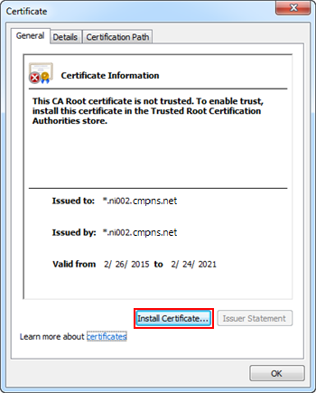
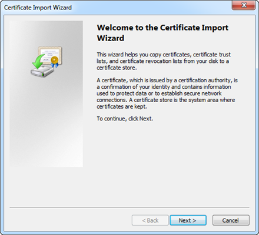
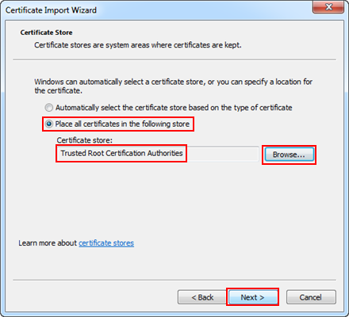
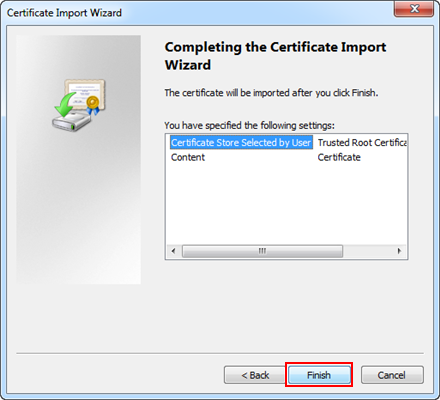
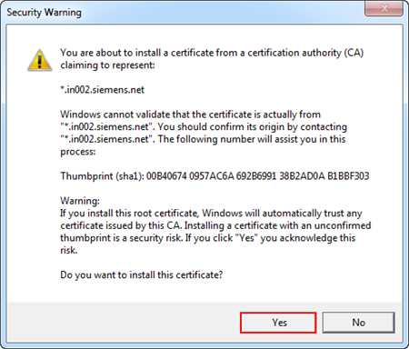
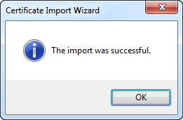

Install Certificates in the Trusted Root Certification Authorities (TRCA) Store
- You want to install the certificates in the Trusted Root Certification Authorities Windows Certificate store using the Certificate dialog box.
- In the Certificate dialog box, click Install Certificate.

- The Certificate Import Wizard dialog box displays.
- In the Certificate Import Wizard, click Next.

- Select the Place all certificates in the following store option, and browse to and select Trusted Root Certification Authorities certificate store.
NOTE: When installing certificates on the Windows 10 operating system, you must select the Windows store from where you want to import the certificate. For example, User Store. - Click Next.

- Click Finish.

- When the Security Warning message displays, click Yes to install the certificate.

- Click OK to acknowledge the successful import.

- In the Desigo CC web page, click the Desigo CC tab, and then click the Windows App Client thumbnail for launching the Windows App Client.
The installation of Desigo CC starts. When completed, the logon dialog box displays. - Enter your username and password.
- Select the domain.
- Click Logon.